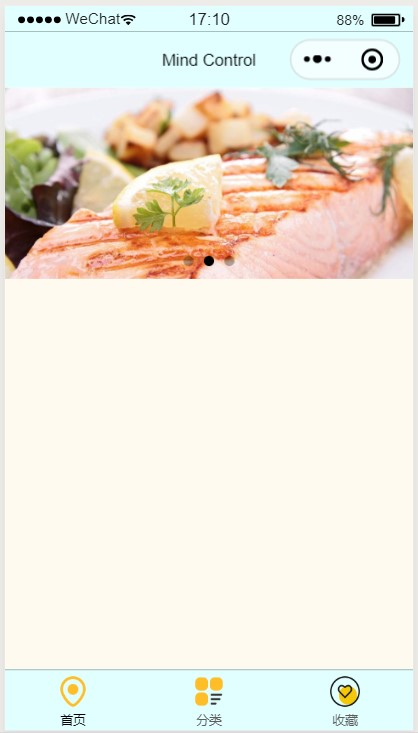

微信小程序怎样创建轮播图？
实现图片轮播需要用到什么组件？

在创建轮播图时，必须要使用swiper组件来实现，在写这个标签中还需加入indicator-dots属性，以用于覆盖组件默认样式，自定义样式；同时还需跟一个block标签，以添加控制属性wx:for,wx:key。wxml代码如下：
<swiper class="" indicator-dots="true" autoplay="true" interval="5000" duration="1000">
<block wx:for="{{picList}}" wx:key="index">
<swiper-item>
<image src="{{item}}" class="slide-image" mode="aspectFill" bindtap='previewImg' data-previewurl='{{picList}}'
data-currenturl='{{item}}'/>
</swiper-item>
</block>
</swiper>
在js中，需要添加previewImg条件函数，用于添加图片链接。
Page({
data: {
},
//预览图片
previewImg: function (e) {
var currentUrl = e.currentTarget.dataset.currenturl
var previewUrls = e.currentTarget.dataset.previewurl
wx.previewImage({
current: currentUrl, //必须是http图片，本地图片无效
urls: previewUrls, //必须是http图片，本地图片无效
})
},
合理使用swiper组件，swiper千万不要在外面加上任何标签，例如 view 之类的，如果加了可能会导致轮播图出不来。